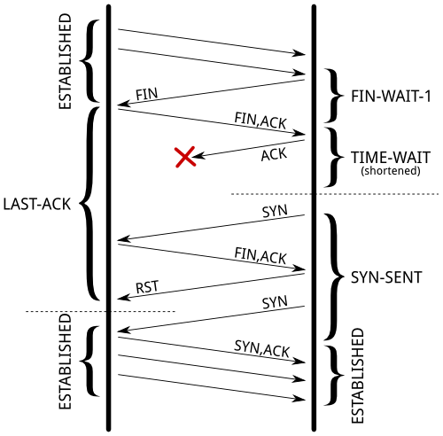

Coping with the TCP TIME-WAIT state on busy Linux servers
Vincent Bernat
TL;DR: Do not enable net.ipv4.tcp_tw_recycle.
The Linux kernel documentation is not very helpful about what
net.ipv4.tcp_tw_recycle does:
Enable fast recycling
TIME-WAITsockets. Default value is 0. It should not be changed without advice/request of technical experts.
Its sibling, net.ipv4.tcp_tw_reuse is a little bit more documented
but the language is about the same:
Allow to reuse
TIME-WAITsockets for new connections when it is safe from protocol viewpoint. Default value is 0. It should not be changed without advice/request of technical experts.
The mere result of this lack of documentation is that we find numerous
tuning guides advising to set both these settings to 1 to reduce the
number of entries in the TIME-WAIT state. However, as stated by
tcp(7) manual page, the net.ipv4.tcp_tw_recycle option is quite
problematic for public-facing servers as it won’t handle connections
from two different computers behind the same NAT device, which is a
problem hard to detect and waiting to bite you:
Enable fast recycling of
TIME-WAITsockets. Enabling this option is not recommended since this causes problems when working with NAT (Network Address Translation).
I will provide here a more detailed explanation in the hope to teach people who are wrong on the Internet.

As a sidenote, despite the use of ipv4 in its name, the
net.ipv4.tcp_tw_recycle control also applies to IPv6. Also, keep in
mind we are looking at the TCP stack of Linux. This is completely
unrelated to Netfilter connection tracking which may be tweaked in
other ways1.
About TIME-WAIT state
Let’s rewind a bit and have a close look at this TIME-WAIT state.
What is it? See the TCP state diagram below2:

Only the end closing the connection first will reach the
TIME-WAIT state. The other end will follow a path which usually
permits to quickly get rid of the connection.
You can have a look at the current state of connections with ss
-tan:
$ ss -tan | head -5 LISTEN 0 511 *:80 *:* SYN-RECV 0 0 192.0.2.145:80 203.0.113.5:35449 SYN-RECV 0 0 192.0.2.145:80 203.0.113.27:53599 ESTAB 0 0 192.0.2.145:80 203.0.113.27:33605 TIME-WAIT 0 0 192.0.2.145:80 203.0.113.47:50685
Purpose
There are two purposes for the TIME-WAIT state:
- The most known one is to prevent delayed segments from one
connection being accepted by a later connection relying on the
same quadruplet (source address, source port, destination address,
destination port). The sequence number also needs to be in a
certain range to be accepted. This narrows a bit the problem but
it still exists, especially on fast connections with large receive
windows. RFC 1337 explains in details what happens when the
TIME-WAITstate is deficient3. Here is an example of what could be avoided if theTIME-WAITstate wasn’t shortened:

- The other purpose is to ensure the remote end has closed the
connection. When the last ACK is lost, the remote end stays in
the
LAST-ACKstate4. Without theTIME-WAITstate, a connection could be reopened while the remote end still thinks the previous connection is valid. When it receives a SYN segment (and the sequence number matches), it will answer with a RST as it is not expecting such a segment. The new connection will be aborted with an error:

RFC 793 requires the TIME-WAIT state to last twice the time of the
MSL. On Linux, this duration is not tunable and is defined in
include/net/tcp.h as one minute:
#define TCP_TIMEWAIT_LEN (60*HZ) /* how long to wait to destroy TIME-WAIT * state, about 60 seconds */
There have been
propositions to turn this into a tunable value but
it has been refused on the ground the TIME-WAIT state is a good thing.
Problems
Now, let’s see why this state can be annoying on a server handling a lot of connections. There are three aspects of the problem:
- the slot taken in the connection table preventing new connections of the same kind,
- the memory occupied by the socket structure in the kernel, and
- the additional CPU usage.
The result of ss -tan state time-wait | wc -l is not a problem per se!
Connection table slot
A connection in the TIME-WAIT state is kept for one minute in the
connection table. This means, another connection with the same
quadruplet (source address, source port, destination address,
destination port) cannot exist.
For a web server, the destination address and the destination port are
likely to be constant. If your web server is behind a L7
load-balancer, the source address will also be constant. On Linux, the
client port is by default allocated in a port range of about 30,000
ports (this can be changed by tuning
net.ipv4.ip_local_port_range). This means that only 30,000
connections can be established between the web server and the
load-balancer every minute, so about 500 connections per second.
If the TIME-WAIT sockets are on the client side, such a situation is
easy to detect. The call to connect() will return EADDRNOTAVAIL
and the application will log some error message about that. On the
server side, this is more complex as there is no log and no counter to
rely on. In doubt, you should just try to come with something sensible
to list the number of used quadruplets:
$ ss -tan 'sport = :80' | awk '{print $(NF)" "$(NF-1)}' | \ > sed 's/:[^ ]*//g' | sort | uniq -c 696 10.24.2.30 10.33.1.64 1881 10.24.2.30 10.33.1.65 5314 10.24.2.30 10.33.1.66 5293 10.24.2.30 10.33.1.67 3387 10.24.2.30 10.33.1.68 2663 10.24.2.30 10.33.1.69 1129 10.24.2.30 10.33.1.70 10536 10.24.2.30 10.33.1.73
The solution is more quadruplets5. This can be done in several ways (in the order of difficulty to setup):
- use more client ports by setting
net.ipv4.ip_local_port_rangeto a wider range, - use more server ports by asking the web server to listen to several additional ports (81, 82, 83, …),
- use more client IP by configuring additional IP on the load balancer and use them in a round-robin fashion,
- use more server IP by configuring additional IP on the web server6.
Of course, a last solution is to tweak net.ipv4.tcp_tw_reuse and
net.ipv4.tcp_tw_recycle. Don’t do that yet, we will cover those
settings later.
Memory
With many connections to handle, leaving a socket open for one
additional minute may cost your server some memory. For example, if
you want to handle about 10,000 new connections per second, you will
have about 600,000 sockets in the TIME-WAIT state. How much memory
does it represent? Not that much!
First, from the application point of view, a TIME-WAIT socket does
not consume any memory: the socket has been closed. In the kernel, a
TIME-WAIT socket is present in three structures (for three different purposes):
-
A hash table of connections, named the “TCP established hash table” (despite containing connections in other states) is used to locate an existing connection, for example when receiving a new segment.
Each bucket of this hash table contains both a list of connections in the
TIME-WAITstate and a list of regular active connections. The size of the hash table depends on the system memory and is printed at boot:$ dmesg | grep "TCP established hash table" [ 0.169348] TCP established hash table entries: 65536 (order: 8, 1048576 bytes)
It is possible to override it by specifying the number of entries on the kernel command line with the
thash_entriesparameter.Each element of the list of connections in the
TIME-WAITstate is astruct tcp_timewait_sock, while the type for other states isstruct tcp_sock7:struct tcp_timewait_sock { struct inet_timewait_sock tw_sk; u32 tw_rcv_nxt; u32 tw_snd_nxt; u32 tw_rcv_wnd; u32 tw_ts_offset; u32 tw_ts_recent; long tw_ts_recent_stamp; }; struct inet_timewait_sock { struct sock_common __tw_common; int tw_timeout; volatile unsigned char tw_substate; unsigned char tw_rcv_wscale; __be16 tw_sport; unsigned int tw_ipv6only : 1, tw_transparent : 1, tw_pad : 6, tw_tos : 8, tw_ipv6_offset : 16; unsigned long tw_ttd; struct inet_bind_bucket *tw_tb; struct hlist_node tw_death_node; };
-
A set of lists of connections, called the “death row”, is used to expire the connections in the
TIME-WAITstate. They are ordered by how much time left before expiration.It uses the same memory space as for the entries in the hash table of connections. This is the
struct hlist_node tw_death_nodemember ofstruct inet_timewait_sock. -
A hash table of bound ports, holding the locally bound ports and the associated parameters, is used to determine if it is safe to listen to a given port or to find a free port in the case of dynamic bind. The size of this hash table is the same as the size of the hash table of connections:
$ dmesg | grep "TCP bind hash table" [ 0.169962] TCP bind hash table entries: 65536 (order: 8, 1048576 bytes)
Each element is a
struct inet_bind_socket. There is one element for each locally bound port. ATIME-WAITconnection to a web server is locally bound to the port 80 and shares the same entry as its siblingTIME-WAITconnections. On the other hand, a connection to a remote service is locally bound to some random port and does not share its entry.
So, we are only concerned by the space occupied by struct
tcp_timewait_sock and struct inet_bind_socket. There is one struct
tcp_timewait_sock for each connection in the TIME-WAIT state,
inbound or outbound. There is one dedicated struct inet_bind_socket
for each outbound connection and none for an inbound connection.
A struct tcp_timewait_sock is only 168 bytes while a struct
inet_bind_socket is 48 bytes:
$ sudo apt-get install linux-image-$(uname -r)-dbg [...] $ gdb /usr/lib/debug/boot/vmlinux-$(uname -r) (gdb) print sizeof(struct tcp_timewait_sock) $1 = 168 (gdb) print sizeof(struct tcp_sock) $2 = 1776 (gdb) print sizeof(struct inet_bind_bucket) $3 = 48
So, if you have about 40,000 inbound connections in the TIME-WAIT
state, it should eat less than 10MB of memory. If you have about
40,000 outbound connections in the TIME-WAIT state, you need to
account for 2.5MB of additional memory. Let’s check that by looking
at the output of slabtop. Here is the result on a server with about
50,000 connections in the TIME-WAIT state, 45,000 of which are
outbound connections:
$ sudo slabtop -o | grep -E '(^ OBJS|tw_sock_TCP|tcp_bind_bucket)' OBJS ACTIVE USE OBJ SIZE SLABS OBJ/SLAB CACHE SIZE NAME 50955 49725 97% 0.25K 3397 15 13588K tw_sock_TCP 44840 36556 81% 0.06K 760 59 3040K tcp_bind_bucket
There is nothing to change here: the memory used by TIME-WAIT
connections is really small. If your server need to handle
thousands of new connections per second, you need far more memory to
be able to efficiently push data to clients. The overhead of
TIME-WAIT connections is negligible.
CPU
On the CPU side, searching for a free local port can be a bit
expensive. The work is done by the
inet_csk_get_port() function which uses a lock
and iterate on locally bound ports until a free port is found. A large
number of entries in this hash table is usually not a problem if you
have a lot of outbound connections in the TIME-WAIT state (like
ephemeral connections to a memcached server): the connections
usually share the same profile, the function will quickly find a free
port as it iterates on them sequentially.
Other solutions
If you still think you have a problem with TIME-WAIT
connections after reading the previous section, there are three
additional solutions to solve them:
- disable socket lingering,
net.ipv4.tcp_tw_reuse, andnet.ipv4.tcp_tw_recycle.
Socket lingering
When close() is called, any remaining data in the kernel buffers
will be sent in the background and the socket will eventually
transition to the TIME-WAIT state. The application can continue to
work immediatly and assume that all data will eventually be safely delivered.
However, an application can choose to disable this behaviour, known as socket lingering. There are two flavors:
-
In the first one, any remaining data will be discarded and instead of closing the connection with the normal four-packet connection termination sequence, the connection will be closed with a RST (and therefore, the peer will detect an error) and will be immediatly destroyed. No
TIME-WAITstate in this case. -
With the second flavor, if there is any data still remaining in the socket send buffer, the process will sleep when calling
close()until either all the data is sent and acknowledged by the peer or the configured linger timer expires. It is possible for a process to not sleep by setting the socket as non-blocking. In this case, the same process happens in the background. It permits the remaining data to be sent during a configured timeout but if the data is succesfully sent, the normal close sequence is run and you get aTIME-WAITstate. And on the other case, you’ll get the connection close with a RST and the remaining data is discarded.
In both cases, disabling socket lingering is not a one-size-fits-all solution. It may be used by some applications like HAProxy or Nginx when it is safe to use from the upper protocol point of view. There are good reasons to not disable it unconditionnaly.
net.ipv4.tcp_tw_reuse
The TIME-WAIT state prevents delayed segments to be accepted in an
unrelated connection. However, on certain conditions, it is possible
to assume a new connection’s segment cannot be misinterpreted with an
old connection’s segment.
RFC 1323 presents a set of TCP extensions to improve performance over high-bandwidth paths. Among other things, it defines a new TCP option carrying two four-byte timestamp fields. The first one is the current value of the timestamp clock of the TCP sending the option while the second one is the most recent timestamp received from the remote host.
By enabling net.ipv4.tcp_tw_reuse, Linux will reuse an existing
connection in the TIME-WAIT state for a new outgoing connection
if the new timestamp is strictly bigger than the most recent timestamp
recorded for the previous connection: an outgoing connection in the
TIME-WAIT state can be reused after just one second.
How is it safe? The first purpose of the TIME-WAIT state was to
avoid duplicate segments to be accepted in an unrelated
connection. Thanks to the use of timestamps, such a duplicate segments
will come with an outdated timestamp and therefore be discarded.
The second purpose was to ensure the remote end is not in the
LAST-ACK state because of the lost of the last ACK. The remote end
will retransmit the FIN segment until:
- it gives up (and tear down the connection), or
- it receives the ACK it is waiting (and tear down the connection), or
- it receives a RST (and tear down the connection).
If the FIN segments are received in a timely manner, the local end
socket will still be in the TIME-WAIT state and the expected ACK
segments will be sent.
Once a new connection replaces the TIME-WAIT entry, the SYN
segment of the new connection is ignored (thanks to the timestamps)
and won’t be answered by a RST but only by a retransmission of the
FIN segment. The FIN segment will then be answered with a RST
(because the local connection is in the SYN-SENT state) which will
allow the transition out of the LAST-ACK state. The initial SYN
segment will eventually be resent (after one second) because there was
no answer and the connection will be established without apparent
error, except a slight delay:

It should be noted that when a connection is reused, the TWRecycled counter is increased (despite its name).
net.ipv4.tcp_tw_recycle
This mechanism also relies on the timestamp option but affects both incoming and outgoing connections which is handy when the server usually closes the connection first8.
The TIME-WAIT state is scheduled to expire sooner: it will be
removed after the retransmission timeout (RTO) interval which is
computed from the RTT and its variance. You can spot the appropriate
values for a living connection with the ss command:
$ ss --info sport = :2112 dport = :4057 State Recv-Q Send-Q Local Address:Port Peer Address:Port ESTAB 0 1831936 10.47.0.113:2112 10.65.1.42:4057 cubic wscale:7,7 rto:564 rtt:352.5/4 ato:40 cwnd:386 ssthresh:200 send 4.5Mbps rcv_space:5792
To keep the same guarantees the TIME-WAIT state was providing, while
reducing the expiration timer, when a connection enters the
TIME-WAIT state, the latest timestamp is remembered in a dedicated
structure containing various metrics for previous known
destinations. Then, Linux will drop any segment from the remote host
whose timestamp is not strictly bigger than the latest recorded
timestamp, unless the TIME-WAIT state would have expired:
if (tmp_opt.saw_tstamp && tcp_death_row.sysctl_tw_recycle && (dst = inet_csk_route_req(sk, &fl4, req, want_cookie)) != NULL && fl4.daddr == saddr && (peer = rt_get_peer((struct rtable *)dst, fl4.daddr)) != NULL) { inet_peer_refcheck(peer); if ((u32)get_seconds() - peer->tcp_ts_stamp < TCP_PAWS_MSL && (s32)(peer->tcp_ts - req->ts_recent) > TCP_PAWS_WINDOW) { NET_INC_STATS_BH(sock_net(sk), LINUX_MIB_PAWSPASSIVEREJECTED); goto drop_and_release; } }
When the remote host is in fact a NAT device, the condition on timestamps will forbid allof the hosts except one behind the NAT device to connect during one minute because they do not share the same timestamp clock. In doubt, this is far better to disable this option since it leads to difficult to detect and difficult to diagnose problems.
The LAST-ACK state is handled in the exact same way as for
net.ipv4.tcp_tw_recycle.
Summary
The universal solution is to increase the number of possible
quadruplets by using, for example, more server ports. This will
allow you to not exhaust the possible connections with TIME-WAIT
entries.
On the server side, do not enable net.ipv4.tcp_tw_recycle unless
you are pretty sure you will never have NAT devices in the
mix. Enabling net.ipv4.tcp_tw_reuse is useless for incoming connections.
On the client side, enabling net.ipv4.tcp_tw_reuse is another
almost-safe solution. Enabling net.ipv4.tcp_tw_recycle in addition
to net.ipv4.tcp_tw_reuse is mostly useless.
And a final quote by W. Richard Stevens, in Unix Network Programming:
The
TIME_WAITstate is our friend and is there to help us (i.e., to let old duplicate segments expire in the network). Instead of trying to avoid the state, we should understand it.
-
Notably, fiddling with
net.netfilter.nf_conntrack_tcp_timeout_time_waitwon’t change anything on how the TCP stack will handle theTIME-WAITstate. ↩ -
This diagram is licensed under the LaTeX Project Public License 1.3. The original file is available on this page. ↩
-
The first work-around proposed in RFC 1337 is to ignore RST segments in the
TIME-WAITstate. This behaviour is controlled bynet.ipv4.rfc1337which is not enabled by default on Linux because this is not a complete solution to the problem described in the RFC. ↩ -
While in the
LAST-ACKstate, a connection will retransmit the last FIN segment until it gets the expected ACK segment. Therfore, it is unlikely we stay long in this state. ↩ -
On the client side, older kernels also have to find a free local tuple (source address and source port) for each outgoing connection. Increasing the number of server ports or IP won’t help in this case. Linux 3.2 is recent enough to be able to share the same local tuple for different destinations. Thanks to Willy Tarreau for his insight on this aspect. ↩
-
This last solution may seem a bit dumb since you could just use more ports but some servers are not able to be configured this way. The before last solution can also be quite cumbersome to setup, depending on the load-balancing software, but uses less IP than the last solution. ↩
-
The use of a dedicated memory structure for sockets in the
TIME-WAITis here since Linux 2.6.14. Thestruct sock_commonstructure is a bit more verbose and I won’t copy it here. ↩ -
When the server closes the connection first, it gets the
TIME-WAITstate while the client will consider the corresponding quadruplet free and hence may reuse it for a new connection. ↩